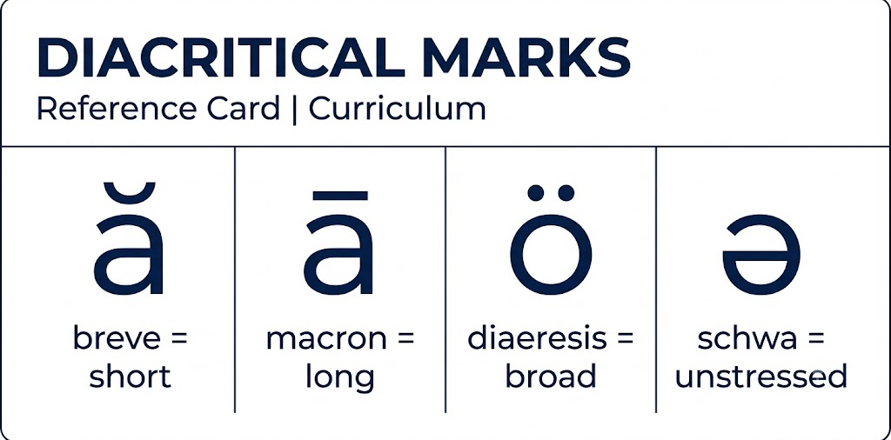

Diacritical Marks Legend
Print this page as a wall reference · Mark only in warm-up words, not in story text · ← Spelling Analysis · Glossary →
When to mark
Use diacritical marks only in the warm-up word box before a story — never in the story text itself. The child must learn to decode unmarked words. Diacritical marks are training wheels, not permanent fixtures.

Marks over Vowels
ă
Breve
Short vowel sound
căt dŏg sĭt
ā
Macron
Long vowel sound
māke tīme nōte
ä
Umlaut (two dots)
Broad /ah/ vowel (father, hot)
fäther tö püt
ə
Schwa
Unstressed lazy vowel (/ŭ/ or /ĭ/)
əbōut happən lovə
ĕ
Breve on E
Short /ĕ/ as in "bed"
bĕd rĕd tĕn
ē
Macron on E
Long /ē/ as in "be"
bē sēe trēe
ĭ
Breve on I
Short /ĭ/ as in "it"
ĭt sĭt pĭn
ī
Macron on I
Long /ī/ as in "kite"
kīte rīde smīle
ŏ
Breve on O
Short /ŏ/ as in "hot"
hŏt nŏt lŏck
ō
Macron on O
Long /ō/ as in "go"
gō bōat rōad
ŭ
Breve on U
Short /ŭ/ as in "cup"
cŭp rŭn sŭn
ū
Macron on U
Long /ū/ as in "use"
ūse cūbe mūsic
ü
Umlaut on U
Special /ü/ as in "put" or German
püt büch
ö
Umlaut on O
Special /ö/ (oo as in "book")
böök gööd fööt
Marks for Syllables & Stress
·
Middle Dot (Interpunct)
Syllable break — used in multi-syllable words
ba·by hap·py la·dy
'
Primary Stress Mark
Strongest syllable in a multi-syllable word
'ba·by hap'py to·'mor·row
ˌ
Secondary Stress Mark
Second-strongest syllable
inˌves·ti·'gate phoˌto·'graph
IPA Symbols Used in Curriculum
/ /
Phonetic Brackets
Enclose a phoneme's pronunciation
/k/ /ă/ /t/ → cat
ŋ
Eng (velar nasal)
The /ng/ sound in "sing"
siŋ riŋ loŋ
θ / ð
Theta / Eth (voiced & unvoiced TH)
Two distinct sounds of TH phonogram
θink (unvoiced) ðis (voiced)
ʃ / ʒ
Esh / Ezh
SH sound and its voiced partner (zh)
ʃip pleaʒure viʒion
tʃ / dʒ
T-esh / D-esh (affricates)
CH/J sounds
tʃin dʒet dʒump
ɹ
Turned R (controlled R)
The R phonogram sound (LoE: "controlled R")
ɹed ɹat ɹun
Memory aid: which mark is which
Breve (˘) = a little curve = a short sound.
Macron (¯) = a long straight line = a long sound.
Two dots (¨) = broad or special sound (father, put, book).
Schwa (ə) = a lazy upside-down e = the unstressed sound.
Middle dot (·) = a stop between syllables.